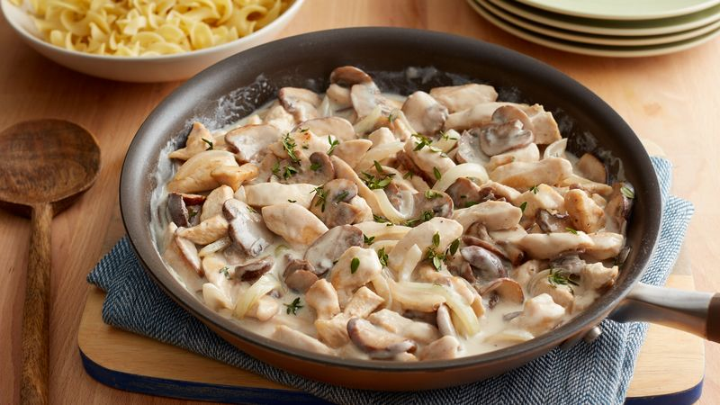

Chicken Stroganoff

Ingredients
- 2 tbsp butter
- 20 ounces boneless skinless chicken breast, cut into 1 1/2x1/2-inch strips
- 2 packages (8 oz each) fresh sliced cremini mushrooms
- 1 medium onion, thinly sliced
- 3 tbsp all-purpose flour
- 1/2 tsp salt
- 1/4 tsp pepper
- 1 cup Progresso™ chicken broth
- 1/2 cup sour cream
Instructions
- In a 12-inch nonstick skillet, melt 1 tbsp of the butter over
medium-high heat. Add chicken, cook 6 to 7 minutes, stirring
occasionally, until chicken is no longer pink in center.
Remove to plate.
- In same skillet, melt remaining 1 tbsp butter. Add mushrooms and
onion, cook 5 to 6 minutes, stirring occasionally, until onions
are tender. Stir in flour, salt, and pepper.
- Reduce heat to medium. Add chicken and broth, cook 3 to 4 minutes,
stirring occasionally, until slightly thickened. Stir in sour
cream until well blended and heated through.
Back to homepage